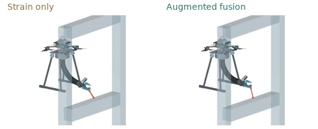
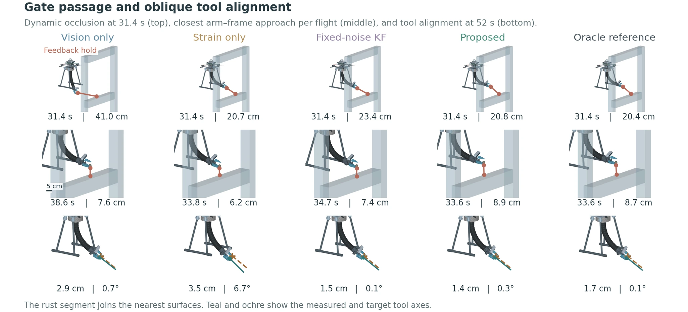
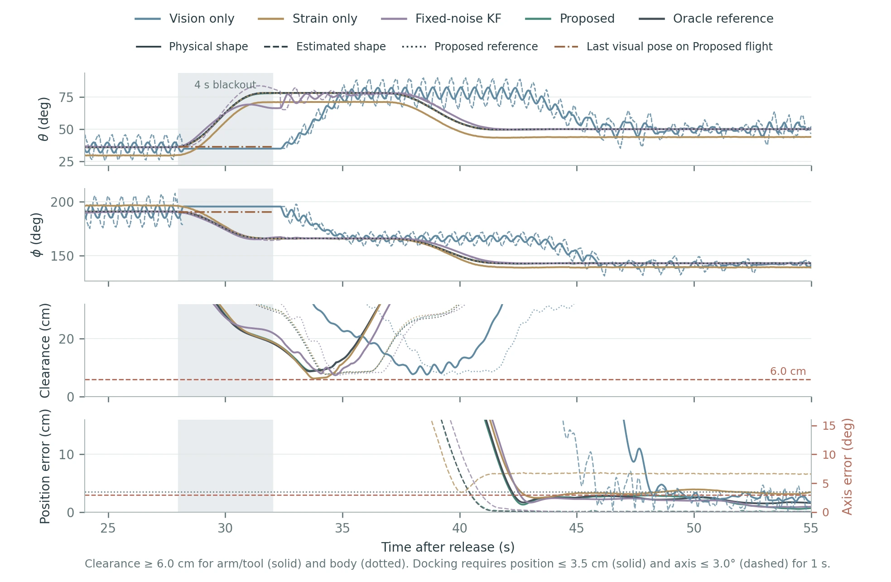
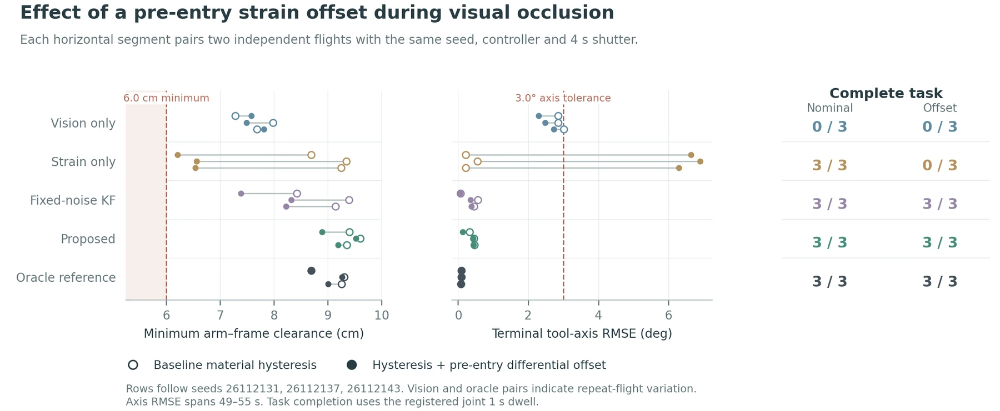
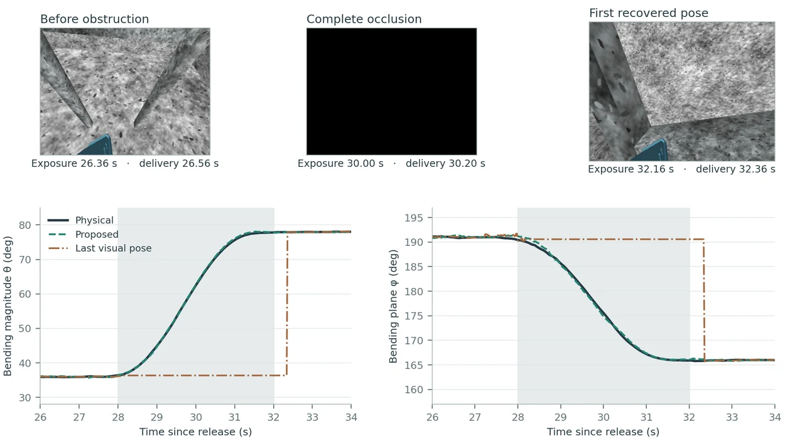
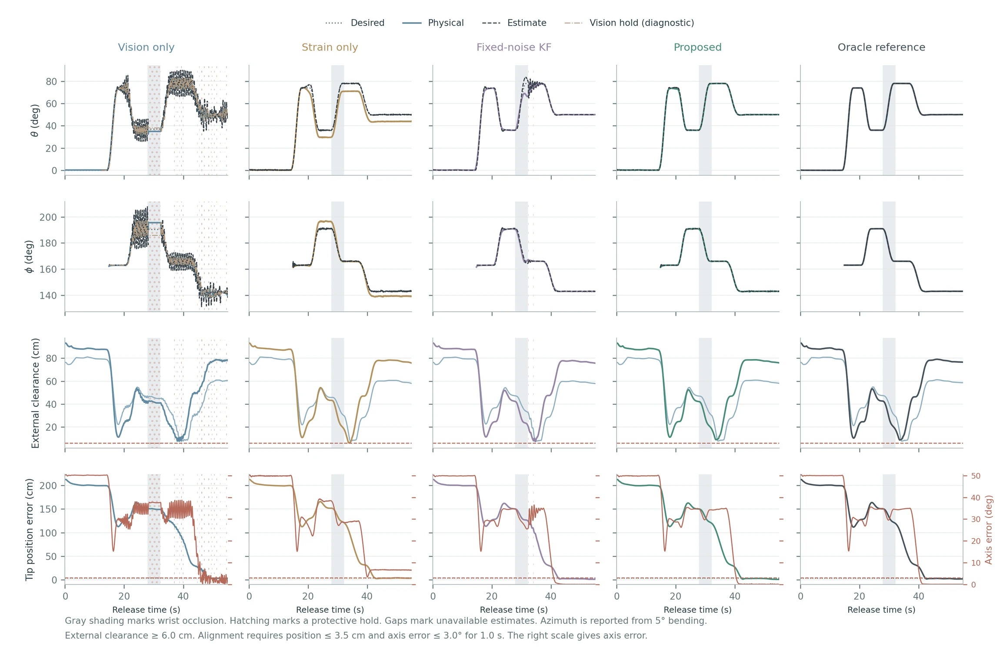
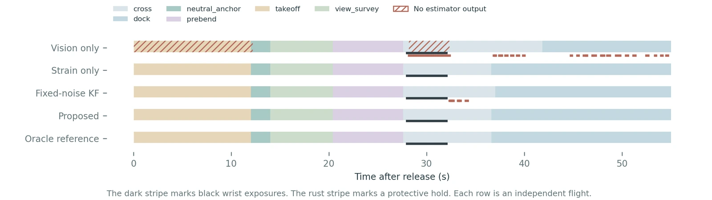

G2 · 单门二维形态闭环 / 2026-11-21 00:20（北京时间）
冻结形态反馈下的受限过门与斜向精细对准
进门前形成差模偏移，过门途中完全失视 4 秒。每种反馈源在相同的三个种子上各飞一趟。增广融合完成 3/3 趟，纯应变完成 0/3 趟，固定噪声 KF 完成 3/3 趟。三种子下，增广融合与纯应变的门后工具轴向 RMSE 中位数分别为 0.43° 和 6.64°。
模型与场景

01进门后臂爪与门槛的距离
取自第 33.50 秒的同步斜视机位。左列为纯应变，右列为增广融合，红线连接各趟实际最近的表面。


02同视角 3D 过门与门后对准
首行为同步遮挡关键帧，中行为各趟最接近门框的过门时刻，末行为同一时刻的夹爪与目标轴。

曲线与机制图

01弯曲、方位、三维净空与末端误差
五趟轨迹使用同一时间坐标。灰带覆盖腕部相机的四秒全遮挡。


02加上差模偏移后，净空和对准怎样变化
每段连接同一种子的两趟动态遮挡飞行。空心与实心符号分别对应基础迟滞和进门前已形成差模偏移的工况。纯视觉与真值参考两行给出独立重复飞行的波动。


03腕部 RGB-D 原帧与保留末帧的角度误差
取自同一趟融合飞行，图像与角度按曝光和交付两种时间戳对齐。


04五方法独立飞行的完整时序
每列保留该趟自己的目标、真实形态和估计。查看整个飞行区间的净空、位置和工具轴向误差。


05逐方法的状态与停顿
比较进入过门与对准阶段的时间，查看因反馈断流或包络保护而暂停的区间。

视频回放
01五方法同步多机位回放
每列是一趟独立飞行，从两路系统模型视图切到当时送入跟踪器的腕部图像，下方同步显示臂爪净空和末端误差。
论文与报告
第一页解释形态反馈、净空与末端对位，第二页汇总三配对种子上的四种工况。
数据及运行记录
成功判据、停顿、工具误差、角度与方位精度，以及每项有效观测的样本数。
代表种子的差模纯应变飞行中，清晰组最小臂爪净空为 5.68 cm，遮挡组为 6.21 cm。两趟在各自最近点处的真实弯角相差 0.005°，机身高度相差 5.51 mm。
按时间戳配对 842,065 条 PX4 电机输出与 HIL 指令。ROS 的二维参考、估计与驱动量各有 174,000 个样本逐点核对。
按配对种子和工况保存原始包的固定 Git 修订地址、字节数和完整 SHA-256。
逐种工况给出三趟的最小值、中位数、最大值、任务通过数和可用观测数。
带载机械臂、门框尺寸、目标位姿、许可阈值、遮挡时刻与配对矩阵。
六维增广形态融合与传感器参数逐文件锁定。